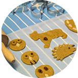
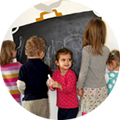

<!DOCTYPE html>
<html lang="en">
  <head>
    <meta charset="utf-8">
    <meta http-equiv="X-UA-Compatible" content="IE=edge">
    <meta name="viewport" content="width=device-width, initial-scale=1">
    <meta name=”description” content=”A Babolygóban szakképzett és lelkes óvónők és dadusok várják a gyerekeket. Hisszük, hogy a kicsiknek a szeretteljes, odaadó gondoskodás a legfontosabb. Babolygo.com”>
    <link rel=”author” href=”https://plus.google.com/u/0/107049021056428912119/posts“/>
    <link rel=”publisher” href=”https://plus.google.com/u/0/b/116960354102312416205/116960354102312416205/about“/>
    <title>Ismerje meg pedagógusainkat és óvodánkat | babolygo.com</title>
    <link href="css/bootstrap.min.css" rel="stylesheet">
    <link href="css/custom.css" rel="stylesheet">
        <script type="text/javascript">

  var _gaq = _gaq || [];
  _gaq.push(['_setAccount', 'UA-10255275-5']);
  _gaq.push(['_trackPageview']);

  (function() {
    var ga = document.createElement('script'); ga.type = 'text/javascript'; ga.async = true;
    ga.src = ('https:' == document.location.protocol ? 'https://ssl' : 'http://www') + '.google-analytics.com/ga.js';
    var s = document.getElementsByTagName('script')[0]; s.parentNode.insertBefore(ga, s);
  })();
</script>

  </head>
  <body>
 <!--navigation starts-->
     <div class="container-fluid">
         <div class="container">
<div class="row">
      <nav class="navbar navbar-default" role="navigation">
            <div class="navbar-header">
               <a href="index.html"></a>                <button type="button" class="navbar-toggle" data-toggle="collapse" data-target="#collapse">
                    <span class="sr-only">Toggle navigation</span>
                    <span class="icon-bar"></span>
                    <span class="icon-bar"></span>
                    <span class="icon-bar"></span>
                    <span class="icon-bar"></span>
                </button>
        </div>
            <div class="collapse navbar-collapse" id="collapse">
               <ul class="nav navbar-nav navbar-right jelentkezes hidden-xs hidden-sm">
              <li><a href="kapcsolat.html">Jelentkezés</a></li>
              </ul>
            	<ul class="nav navbar-nav navbar-right">
                	<li class="active"><a href="A-babolygorol.html">A Babolygóról</a></li>
                    <li><a href="Filozofiank.html">Filozófiánk</a></li>
                    <li><a href="Valaszok.html">Válaszok</a></li>
                    <li><a href="Galeria.html">Galéria</a></li>
                    <li><a href="Araink.html">Áraink</a></li>
                    <li><a href="kapcsolat.html">Kapcsolat</a></li>
              </ul>
            </div>  
      </nav>
        </div>         </div>
  </div>
  <!--navigation ends-->
    <div class="container">
<ul class="nav nav-tabs responsive" id="myTab">
	<li class="active"><a href="#bemutatkozunk">Bemutatkozunk</a></li>
	<li><a href="#kornyezet">Környezet</a></li>
	<li><a href="#evritmusa">Az év ritmusa</a></li>
	<li><a href="#hetritmusa">A hét ritmusa</a></li>
	<li><a href="#napritmusa">A nap ritmusa</a></li>    
</ul>

<div class="tab-content responsive">
  <div class="tab-pane fade in active" id="bemutatkozunk">
  <!--tab content bemutatkozunk starts-->
    <div class="row content">
    <div class="row whiteBg">
    <div class="titleCenter hidden-xs"><h1> Bemutatkozunk</h1></div>
    <div class="col-xs-12 col-sm-6 col-md-6 col-lg-6 marginUp">
    
<h1><strong>Simor Diána vagyok,
        </strong><br>
        a Babolygó Óvoda egyik megálmodója </h1>
       <p> A Babolygó megszületésével régóta dédelgetett álmom válik valóra. Itt termékennyé válhat a tehetségem egy olyan hivatásban, ami örömet szerez nekem is. 1985-ben születtem, érettségi és diploma után négy évig dolgoztam magánóvodában, 2011-ben született Panni lányom.</p>
        <p><strong>Szerintem jó óvoda az, </strong><br>
ahol szabadon, örömmel, szeretetben lehetünk együtt, teret kapunk ahhoz, hogy önmagunkká váljunk - felnőttek és gyerekek egyaránt. Legfontosabb feladatom, hogy hiteles, követésre méltó mintává váljak a gyerekek számára. Felelősen és tudatosan képviseljem a nyitottságot, elfogadást, ehhez pedig biztonságos, inspiráló, a gyerekek életkori sajátosságaihoz igazodó, 
mégis életszerű környezetet teremtsek. </p>
    </div>
    <div class="col-xs-12 col-sm-6 col-md-6 col-lg-6 marginUp">
        
      <h1><strong>Anga Györgyi vagyok,
        </strong><br>
        a Babolygó Óvoda másik megálmodója</h1>
        <p>Tanulmányaimat a kazincbarcikai Óvónőképző Szakközépiskola elvégzése után, a Sárospataki Tanítóképző Főiskolán folytattam, itt szereztem óvodapedagógusi diplomát, jelenleg a BME pedagógiai tanszékén, Közoktatási Vezető Szakon tanulok. Több mint tíz évet dolgoztam óvodapedagógusként. Állami óvodában kezdtem, majd magánóvodában helyezkedtem el, ahol öt évet töltöttem. Két lányom van, Vilma 12 éves, Amália 4 éves</p>
       <p> <strong>Szeretném ha a Babolygó olyan hely lehetne, 
</strong><br>
       ahol a gyermekek életében a főszerepet a játék kapja, hogy ezen keresztül tapasztalhassák meg a környező világot. Hiszem, hogy a gyermek nem kicsinyített, félig kész felnőtt, hanem életkorának megfelelően egy teljes egész lény, akinek világlátása és ítéletalkotása sajátos, és nem mérhető felnőtt mércével. </p>
    </div>
        <div class="col-xs-12 col-sm-6 col-md-6 col-lg-6">
        
    <h1><strong>Czeczidlowszky Emese vagyok,</strong><br />
      a Fészeklakó csoport felelőse</h1>
 <p>2007-ben diplomáztam az ELTE Tanító- és Óvóképző Főiskolai Karán, óvodapedagógusként. Dolgoztam magánóvodában, családi napköziben és sokat vigyáztam gyerekekre saját otthonukban is. Azt vallom, hogy a gyerekeknek elsősorban szeretetre, odaadásra és értő figyelemre van szükségük ahhoz, hogy magabiztos, boldog felnőttekké válhassanak. A Babolygóban mindezt megkapják.  <br />
      <br />
      <strong>Akkor érzem sikeresnek a munkám, </strong><br />
      ha a rám bízott gyerekek vidáman, játék közben, szinte észrevétlenül ügyesednek, okosodnak. Hiszem, hogy a gyermekek figyelmét ki kell érdemelnem, kíváncsiságukat pedig ébren kell tartanom ahhoz, hogy szívesen játszanak velem. Ennek érdekében élményeket, szórakozást kínálok nekik, sohasem kényszert! Igyekszem elfogulatlanul figyelni a gyermekeket, hogy felismerhessem, mely tevékenységekben van szükségük bátorításra és mi az, amiben kiemelkedően teljesítenek.</p>   
 </div>
         <div class="col-xs-12 col-sm-6 col-md-6 col-lg-6">
        
    <h1><strong>Kiss Blanka vagyok,</strong><br />
      a Mezőlakó csoport felelőse</h1>
 <p>2011-ben szereztem óvodapedagógusi diplomát az ELTE-n, családi napköziben kezdem dolgozni, mellette pedig tudásom elmélyítésére elvégeztem a Neveléstudományi mesterszak Koragyermekkor pedagógiája szakirányt az ELTE PPK-n. Ekkor erősödött meg bennem a szakmai elhatározás, hogy minden gyereket megillet a személyre szabott figyelem és elfogadás, aminek munkám során mindenképp eleget akarok tenni. <br />
      <br />
      <strong>Mindennapjaimat átszövi a népzene, néptánc, </strong><br />
       hiszen népi örökségünk minden emberi pillanatra tartogat nekünk valamit: irányt mutat, vigasztal, tanít. Ugyanez igaz a gyermekfolkórra is, ami ölbeli játékokon, mondókákon, dalokon vagy akár ügyességi játékokon keresztül segíti a kicsiket és nagyobbakat. Hiszek benne, hogy ez a sok generáción át ránk hagyományozott kincs napjainkban is ugyanígy hat. Ezért csoportomban a nyugodt és biztonságot adó környezet megteremtése mellett igyekszem minél változatosabb népijátékokat kínálni a gyerekeknek, hogy képességeik kibontakozását segítsem.
</p>   
 </div>

</div>
       </div> 
<!--tab bemutatkozunk ends--> 
  </div>
  <div class="tab-pane fade" id="kornyezet">
    <!--tab content epulet starts-->
    <div class="row content">
    <div class="row whiteBg">
    <div class="titleCenter hidden-xs"><h1>Környezet</h1></div>
    <div class="col-xs-12 col-sm-6 col-md-6 col-lg-6 marginUp">
    
<h1><strong>Az épület</strong></h1>
       <p>A Budapest XII. kerületi Tamási Áron u. 41. sz. alatt álló épület az elmúlt év során teljes felújításon esett át, hogy a gyerekek egy korszerű, kellemes, zöld környezetben lévő helyre érkezzenek. Itt korábban is óvoda működött. Részben Európai Uniós pályázati forrásból, részben befektetők segítségével olyan környezetet alakítottunk ki, ahol tágasak, világosak terek.</p>

<p>A játékok és a berendezési tárgyak főként természetes anyagokból készültek, hogy segítsék a harmonikus, otthonos környezet megteremtését. A gyerekek asztalait, székeit, szekrényeit, egyéb berendezési tárgyait, egyedi bútortervező készíti a Babolygónak. </p>
    </div>
    <div class="col-xs-12 col-sm-6 col-md-6 col-lg-6 marginUp">
        
      <h1><strong>Megközelítés</strong></h1>
        <p>Az óvoda a 112-es és a 102-es busszal is megközelíthető, a megállók 200 méterre vannak az épülettől.</p>
      <h1><strong>Parkolás</strong></h1>
        <p>Közvetlenül az óvoda épülete előtt számtalan ingyenes parkolóhely áll az érkezők rendelkezésére. </p>
    </div>
 </div>
       </div> 
<!--tab epulet ends--> 
  </div> 
  <div class="tab-pane fade" id="evritmusa">
      <!--tab content evritmusa starts-->
    <div class="row content">
    <div class="row whiteBg">
    <div class="titleCenter hidden-xs"><h1>Év ritmusa</h1></div>
    <div class="col-xs-12 col-sm-6 col-md-6 col-lg-6 marginUp">
    
<h1><strong>Őszbúcsúztató</strong></h1>
       <p>Az ünnepen a családokkal közösen meggyújtjuk a gyerekek által készített lámpásokat és gyertyákat, együtt énekelünk, mesélünk, teát és sült almát eszünk. Felkészülünk a közelgő didergésre, vacogásra, toporgásra, sötétségre; kibéleljük magunkat némi melegséggel, fénnyel, finom illatokkal. </p>
    </div>
    <div class="col-xs-12 col-sm-6 col-md-6 col-lg-6 marginUp">
        
      <h1><strong>Mikulás</strong></h1>
        <p>A gyerekek délutáni pihenés után felfedezik a Mikulás nyomait,
és megtalálják a cipőikbe rejtett ajándékokat (gyümölcsöt, diót, mogyorót, apró ajándékot). Szándékunk ezzel, hogy megmaradjon a gyerekek számára a Mikulás varázsa, legyen ez egy láthatatlan jótétemény, amivel örömet szerzünk a gyerekeknek</p>
    </div>
        <div class="col-xs-12 col-sm-6 col-md-6 col-lg-6">
        
    <h1><strong>Télünnep</strong></h1>
 <p>A közelgő ünnepekre a családokkal közös mézeskalács sütéssel készülünk.</p>    
 </div>
         <div class="col-xs-12 col-sm-6 col-md-6 col-lg-6">
        
    <h1><strong>Farsangi hét</strong></h1>
 <p>A farsangi hét alatt a csoportban jókora láda szabadon felhasználható jelmez alapanyag van bent (sálak, madzagok, leplek, fakanalak), amik segítségével közösen készítjük a gyerekek számára a játékhoz szükséges jelmezeket, tárgyakat. Zárásképpen pedig nagy jelmezes táncolást csapunk.</p>    
 </div>
         <div class="col-xs-12 col-sm-6 col-md-6 col-lg-6">
        
    <h1><strong>Tavaszünnep</strong></h1>
 <p>Tavasszal a rügyfakadás, növekedés, virágzás időszakát éljük. Egy közös kertészkedés keretében mi is felvirágozzuk az óvodát, virágot, virágos növényeket ültetünk. </p>    
 </div>
         <div class="col-xs-12 col-sm-6 col-md-6 col-lg-6">
        
    <h1><strong>Nyárünnep</strong></h1>
 <p>Az év zárásaként a Kissvábhegyen tartjuk a hagyományos Babolygó Családi Pikniket.</p>    
 </div>
 </div>
       </div> 
<!--tab evritmusa ends--> 
  </div>
  <div class="tab-pane fade" id="hetritmusa">
        <!--tab content hetritmusa starts-->
    <div class="row content">
    <div class="row whiteBg">
    <div class="titleCenter hidden-xs"><h1>Hét ritmusa</h1></div>
    <div class="col-xs-12 col-sm-6 col-md-6 col-lg-6 marginUp">
    
<h1><strong>Rajzolás, festés, mintázás, kézi munka</strong></h1>
       <p>A rajzeszközök egész nap során elérhetőek a gyerekek számára. Tematikus kötöttség nélkül, önállóan tevékenykednek, rajzaikat külön gyűjtőben gyűjtjük. Az óvónő rajzaikról leolvashatja a gyerekek fejlettségi szintjét, esetleges hiányosságait, speciális szükségleteit.</p>
       <p> A szervezett tevékenységek során változtos technikákkal (festés, vágás, ragasztás, gyurmázás, szövés-fonás, nyomdázás), anyagokkal (házi készítésű gyurma, fonalak, különféle festékek, gyapjú, agyag, termések) ismerkednek meg, alkotnak. Óvodánk szellemiségének megfelelően kreatív tevékenységeink anyagait gyakran képezik újrahasznosított tárgyak, anyagok.</p>
       <p>Ezen alkotások során törekszünk rá, hogy olyat hozzunk létre, amit ténylegesen használni tudunk a mindennapokban, a játék során. </p>
    </div>
    <div class="col-xs-12 col-sm-6 col-md-6 col-lg-6 marginUp">
        
      <h1><strong>Verselés, mesélés, drámajáték</strong></h1>
        <p>A csendes pihenőt minden nap mesélés előzi meg. A csoportok polcain gondosan válogatott mesés és verses kötetek, képes lapozgatók kapnak helyet.</p>
          <p>A feldolgozott versek, mesék hangulata, tematikája kapcsolódik az adott időszak tartalmaihoz, a csoportban felmerülő aktuális élethelyzetekhez. Klasszikus és kortárs szerzők művei egyaránt szerepelnek. Egy-egy mese elmélyültebb átélését bábozással, dramatizálással, szerepjátékkal segítjük.</p>
    </div>
        <div class="col-xs-12 col-sm-6 col-md-6 col-lg-6">
        
    <h1><strong>Ének, zene, dalos játék</strong></h1>
 <p>Óvodánkban az egyszerű mondókák, ölbeli játékok, dalok a mindennapi tevékenységek folyamatos részét képezik, ritmust és lendületet adva azoknak. Biztonságot adnak, megkönnyíthetik az elválást, a belépést a játék világába.</p>    
  <p>A szervezett zenei tevékenységek során a gyerekek megismerkednek az alapvető zenei fogalmakkal (ritmus, tempó, hangerő, hangmagasság), játékainkat ritmushangszerekkel, mozgással, körjátékokkal kísérjük. </p> 
 </div>
         <div class="col-xs-12 col-sm-6 col-md-6 col-lg-6">
        
    <h1><strong>Külső világ tevékeny megismerése</strong></h1>
 <p>A gyermek aktivitása és érdeklődése során tapasztalatokat szerez a szűkebb és tágabb természeti-emberi-tárgyi környezet viszonyairól. Felismeri a mennyiségi, alaki, nagyságbeli és téri viszonyokat: alakul ítélőképessége, fejlődik tér-, sík- és mennyiségszemlélete. A valóság felfedezése során pozitív érzelmi viszonya alakul a természethez, az emberi alkotásokhoz, tanulja azok védelmét, az értékek megőrzését.</p>    
  <p>A fenntarthatóság és környezetünk védelme mellett elkötelezett közösségként, igyekszünk szokásrendszerünkben ennek megfelelő magatartásformákat kialakítani. Mind a gyerekeket körülvevő fizikai környezet, mind a felnőttek viselkedésformái követendő mintaként szolgálnak számukra. </p>  
 </div>
         <div class="col-xs-12 col-sm-6 col-md-6 col-lg-6">
        
    <h1><strong>Mozgás</strong></h1>
 <p>Az óvoda környezeti adottságai kiváló lehetőséget nyújtanak ahhoz, hogy a gyerekek elemi mozgásigényüket változatosan kielégíthessék a szabadban, a tágas csoportszobákban, a korszerű tornateremben. </p>   
  <p>Az udvaron eltöltött idő után minden nap rövid játékos gyermekjóga zárja a délelőttöt. A heti rendszerességű kreatív mozgás keretén belül a gyerekek játékos formában ismerkednek testükkel, a tér, a ritmika, és a dinamika alapelemeivel.
Az óvodások tavasztól őszig járhatnak a Hóvirág Klubba úszás oktatásra. A játékos gyógytorna szükségességéről félévenkénti szűrés során teszünk javaslatot.  </p>   
 </div>
 </div>
       </div> 
<!--tab hetritmusa ends--> 
 </div>
  <div class="tab-pane fade" id="napritmusa">
          <!--tab content napritmusa starts-->
    <div class="row content">
    <div class="row whiteBg">
    <div class="titleCenter hidden-xs"><h1>Nap ritmusa</h1></div>
    <div class="col-xs-12 col-sm-6 col-md-6 col-lg-6 marginUp">
    
       <p> </p>
    </div>
    <div class="col-xs-12 col-sm-6 col-md-6 col-lg-6 marginUp">
        
<!--      <h1><strong>Verselés, mesélés, drámajáték</strong></h1>
        <p>A csendes pihenőt minden nap mesélés előzi meg. A csoportok polcain gondosan válogatott mesés és verses kötetek, képes lapozgatók kapnak helyet.</p>
          <p>A feldolgozott versek, mesék hangulata, tematikája kapcsolódik az adott időszak tartalmaihoz, a csoportban felmerülő aktuális élethelyzetekhez. Klasszikus és kortárs szerzők művei egyaránt szerepelnek. Egy-egy mese elmélyültebb átélését bábozással, dramatizálással, szerepjátékkal segítjük.</p>-->
    </div>
 </div>
     <div class="row whiteBg">
    <p class="text-center">Hamarosan felkerül a tartalom</p>
    </div>

       </div> 
<!--tab napritmusa ends--> 

  </div>
</div>

    </div> 
    <!-- /container -->
    <!--footer starts here-->
        <div class="container">
      <div class="row footer">
        <div class="col-xs-12 col-sm-12 col-md-12 col-lg-12">
        
        <map name="Map">
          <area shape="rect" coords="46,27,94,82" href="https://www.facebook.com/babolygomaganovoda" target="_blank">
          <area shape="rect" coords="93,24,148,83" href="https://plus.google.com/u/0/b/116960354102312416205/116960354102312416205/about" target="_blank">
        </map>
<p class="text-center"><strong>Babolygó Nevelési Központ</strong><br>
            1124 Budapest, Tamási Áron u. 41.<br>
            <a href="mailto:babolygo@babolygo.com">babolygo@babolygo.com,</a>  <a href="mailto:jelentkezes@babolygo.com">jelentkezes@babolygo.com</a></p>
            <p class="text-center">design: <a href="http://www.varadi.tv" target="_blank">www.varadi.tv</a></p>
        </div>
      </div>
    </div>

    <!--footer starts ends-->
    <script src="https://ajax.googleapis.com/ajax/libs/jquery/1.9.1/jquery.min.js"></script>
    <script src="js/bootstrap.min.js"></script>
    <script src="js/responsive-tabs.js"></script>
    <script type="text/javascript">
      $( '#myTab a' ).click( function ( e ) {
        e.preventDefault();
        $( this ).tab( 'show' );
      } );

      ( function( $ ) {
          // Test for making sure event are maintained
          fakewaffle.responsiveTabs( [ 'xs' ] );
      } )( jQuery );

    </script>

  </body>
</html>

